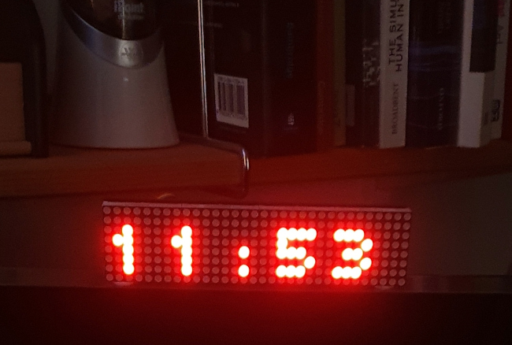
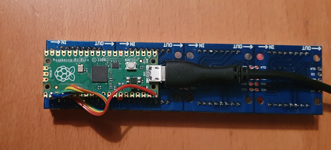

Making an 8x32 LED auxiliary display with a USB interface, from an LED matrix and a Raspberry Pi pico
 In my article Controlling a chain of MAX7219
LED matrices using C on a Raspberry Pi Pico I explained how to
use a Raspberry Pi Pico to control MAX7219 display controller
devices that had been chained to form a LED matrix, typically of
8x32 size. That article provided the low-level details of the interface
and timing, and how MAX7219 devices are wired in a chain such that
data can be shifted from one end of the display to the other.
In my article Controlling a chain of MAX7219
LED matrices using C on a Raspberry Pi Pico I explained how to
use a Raspberry Pi Pico to control MAX7219 display controller
devices that had been chained to form a LED matrix, typically of
8x32 size. That article provided the low-level details of the interface
and timing, and how MAX7219 devices are wired in a chain such that
data can be shifted from one end of the display to the other.
Since then, a number of people have asked for specific construction and programming details. So this article describes how to make an auxiliary 8x32 LED display for a computer, controlled by a USB port. I won't be giving any detailed technical information here, just how to build and use the display.
Here's what the display looks like in use:

The Pi Pico firmware provides a USB serial interface to the host computer. The computer can send text and images to the display using a simple text-based protocol. For testing purposes, the display can be controlled using a terminal emulator.
The full source code for the Pi Pico firmware can be obtained from Pico7219usb in my GitHub repository. If you just want to use the firmware, you'll find pre-compiled UF2 files in the "Releases" section of the repository. Of course, you'll be able to adapt the firmware to suit your own use better if you can modify and rebuild it yourself.
The source bundle contains a simple shell script for Linux that demonstrates how to send control strings to the display. Also in the source code bundle is a full description of the control protocol.
For Linux, I also have a simple command-line client for controlling the Pi Firmware: see Pico7219_cli in my GitHub repository.
Supplies
To build the matrix display unit, you'll need a Raspberry Pi Pico and an 8x32 LED matrix based on four MAX7219 devices. Both the parts are widely available from on-line suppliers. You'll need a way to connect the display to the Pico -- some hook-up wire and a soldering iron, for example. You can use a solderless breadboard, but that's not ideal for a self-contained device. You'll need a USB cable to connect the Pico to the host computer, both for runtime operation, and for uploading firmware.
Construction
You might want to fit the display and the Pico into an enclosure, or just attach the Pico directly to the back of the display (see photo below). There are a number of screw holes that could be used for this attachment, with the appropriate stand-off pillars but, as it happens, they don't line up very well. For non-critical applications, you could just attach the Pico to the back of the display using double-sided sticky pads.
You'll need to position the Pico so you can get to its USB port, and you'll almost certainly want to provide some way to get to the "bootsel" button, so you can upload firmware without dismantling the whole thing.
Only five electrical connections are needed between the Pico and the LED matrix; see the table below.
Pico function Pico GPIO Pico physical LED matrix name number pin number pin name VBUS 40 VCC SPI0 CS 17 22 CS GND 23 GND SPI0 SCK 18 24 CLK SPI0 TX (MOSI) 19 25 DIN
I've chosen to use Pico pins that are close together, but there are other options -- you could use a different SPI port. If you do this, you'll need to modify the firmware (see the documentation for Pico7219usb). I've given the Pico GPIO numbers in the table, because these are the numbers that are used in the Pico C API functions that set up the SPI port.
It's advisable to keep the electrical connections short -- this is easily done if the Pico and the display are physically attached, as can be seen in the photo below.

Installing the firmware
If you don't want to build the firmware yourself, you could try using the pre-compiled version from the "Releases" page of the GitHub repository I linked earlier.
To install the firmware, attach the Pico to a computer's USB
board, whilst holding down the "bootsel" button on the Pico. This
should mount the Pico as an external drive. Copy the firmware file
pico7219usb.uf2 to this drive. The firmware is simple,
and will copy in a second or two. The firmware will start automatically
once it has been copied.
Testing the system
Use a terminal emulator like Minicom or Terraterm to connect to the
USB serial port (usually /dev/ttyACM0 on Linux). To
display some text, enter Dhello[ctrl-J]. The Pico should
echo back 0 OK, and display the text. It probably won't
all fit on the display, so enter G[ctrl-J] to start
scrolling.
[ctrl-J] is the line feed character. Depending on how that terminal emulator is set up, this might be the character it sends when you hit the "enter" key, but this isn't guaranteed. When testing with a terminal emulator, be aware that the Pico doesn't echo back any characters you type -- it just responds with a status code at the end of the command it receives.
Using the display
I've tried to make the Pico-based LED matrix controller easy to use for common tasks, like displaying scrolling text. It's also possible to create custom displays by turning on individual LEDs in the matrix, if necessary. It's certainly possible to display graphics, but it takes a bit of work to control the LEDs one by one.
It should be easy to control the display using simple shell scripts
(an example is included in the source code bundle). The Pico7219_cli bundle demonstrates how to control it using C code. The
Pico7219usb bundle also includes a Perl script (for Linux)
that demonstrates the features for setting individual LEDs.